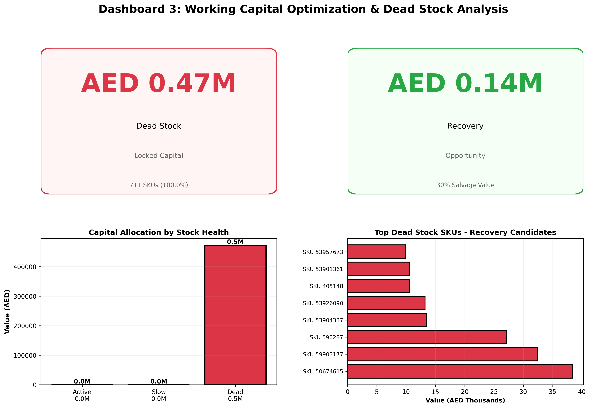

Identifying and recovering capital locked in excess and obsolete spare parts inventory
A spare parts distributor had significant capital tied up in excess, slow moving and obsolete inventory with no clear recovery strategy or visibility into working capital impact.
Identify recovery opportunities and implement working capital optimization strategy to release cash tied up in non-productive inventory.
Analysis showed 100+ SKUs with zero movement for 24+ months, with concentrated value in just 8-10 items. Estimated recovery potential of AED 42K (30% of dead stock value) through salvage, donation or disposal.
Dead stock identification and capital allocation analysis

Let us identify your dead stock opportunity and develop a recovery strategy to release working capital.
Explore Opportunities